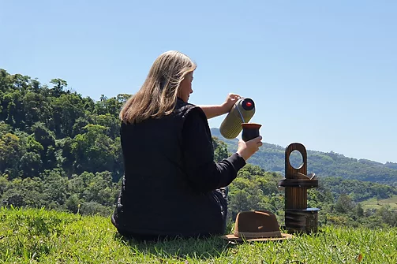
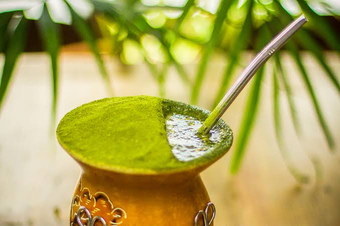
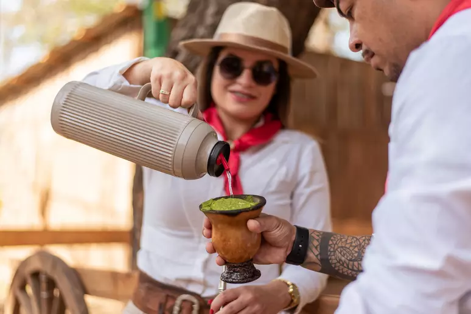
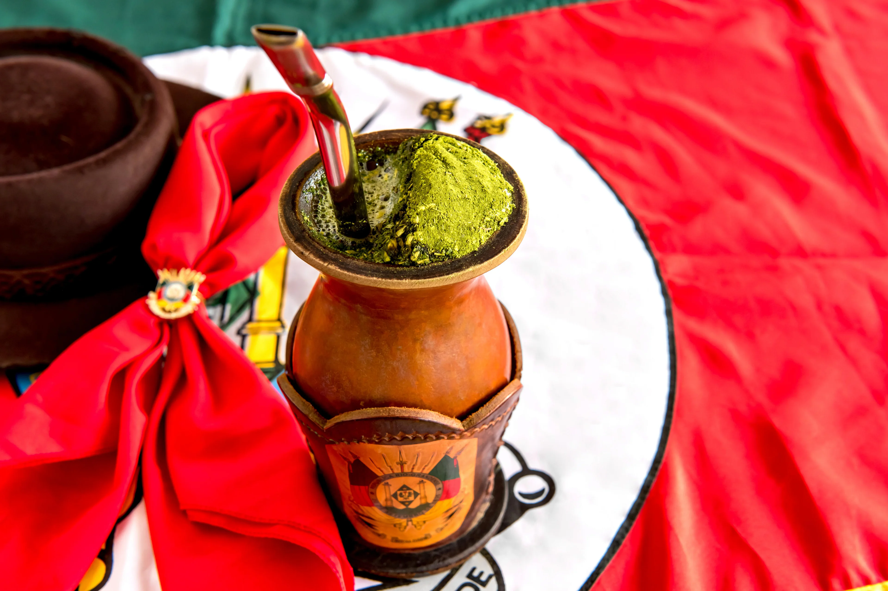
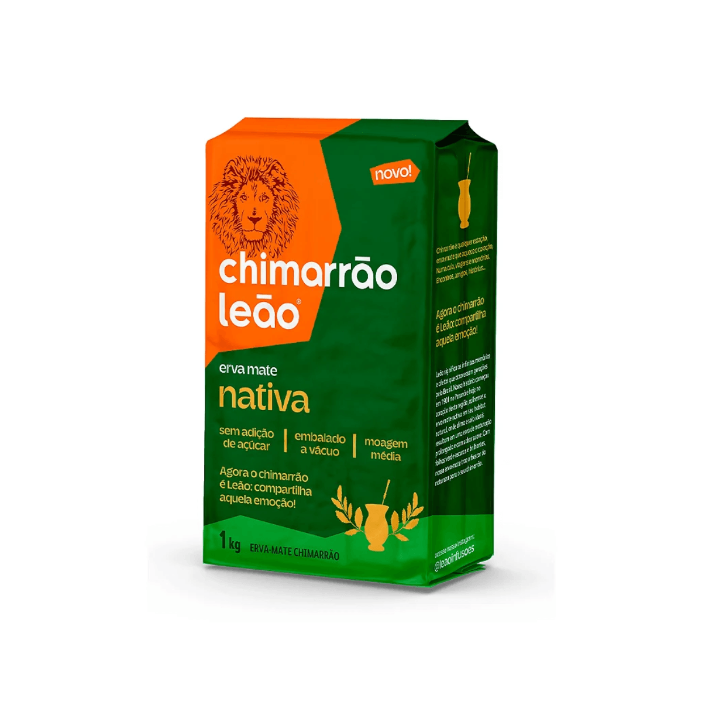

Sobre o Chimarrão

O chimarrão é uma bebida tradicional da região Sul do Brasil, principalmente do Paraná, Santa Catarina e Rio Grande do Sul. Ele é preparado com erva-mate e água quente, servido em uma cuia e consumido com uma bomba.
História do Chimarrão

O chimarrão tem origem nos costumes dos povos indígenas, especialmente os Guarani. Eles já utilizavam a erva-mate muito antes da chegada dos colonizadores europeus. Com o passar do tempo, o hábito se espalhou pelo Sul do Brasil e se tornou uma tradição cultural.
Economia da Erva-Mate

A erva-mate possui grande importância econômica na região Sul. Seu cultivo e comercialização geram empregos e movimentam a economia de várias cidades. Além do chimarrão, ela também é utilizada em outras bebidas e produtos.
Memória e Tradição

O chimarrão representa união, amizade e hospitalidade. É comum as pessoas se reunirem para compartilhar a bebida em conversas, encontros familiares e momentos de descanso. Essa tradição é passada de geração em geração.
Ciclo de Produção da Erva-Mate

A produção da erva-mate começa com o cultivo da planta. Depois, as folhas são colhidas, passam pelo processo de secagem e moagem. Por fim, são embaladas e comercializadas para o preparo do chimarrão.
Cultura do Chimarrão
O chimarrão faz parte da identidade cultural do Sul do Brasil. A roda de chimarrão é um momento de convivência, no qual as pessoas compartilham a bebida e conversam.
Curiosidades sobre o Chimarrão
1. A erva-mate é uma planta nativa da América do Sul.
2. A cuia é o recipiente tradicional usado para beber chimarrão.
3. A bomba é utilizada para tomar a bebida.
4. O chimarrão é muito popular no Paraná, Santa Catarina e Rio Grande do Sul.
5. Compartilhar a cuia é um símbolo de amizade e união.